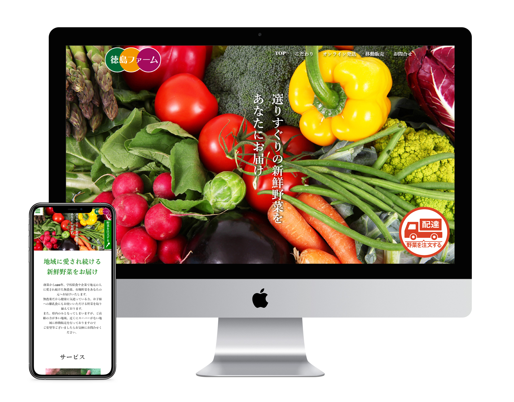

徳島ファーム

コンセプト
老若男女に見てもらえる新鮮野菜販売サイト
ターゲット
20代～70代の食にこだわりのある方、健康に気を付けている方
サイトの概要
創業120年の地域密着型の農家であり、学校や企業に野菜を卸していたが、 コロナの影響で学校の休校が相次ぎ給食に卸す予定の野菜が余ってしまった ため、オンライン野菜配送サービスと移動販売の新事業を展開した。 オンライン野菜配送サービス展開と移動販売の拡大により、 利用者を増やして野菜ロスを無くす事と売上向上を図りたい。
デザインのポイント
どの年代にもわかりやすいように、シンプルなデザインに仕上げました。 また、新鮮野菜を売りにしているため、写真の野菜はより新鮮に見えるもの、 どのような環境で野菜が育っているかを写真で伝わるように致しました。
制作期間
2週間
URL
https://shinzusan.github.io/shinju_portfolio/tokusimafarm/index.html
トップページのみではなく、その他のページも作成しておりますので是非ご覧ください。